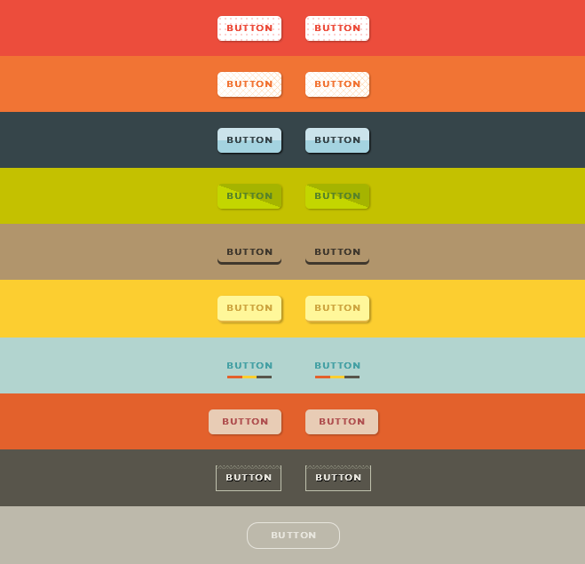
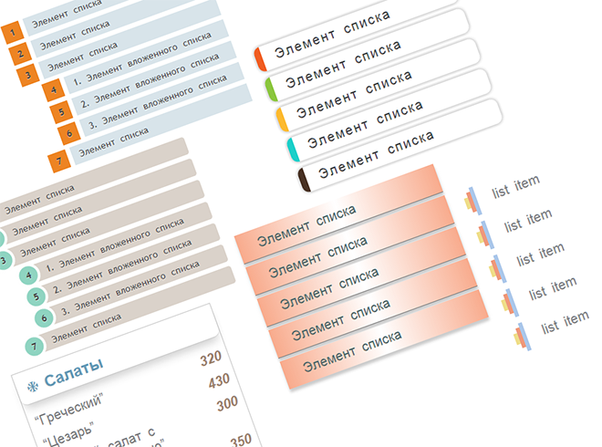

Основы CSS
CSS (Cascading Style Sheets), или каскадные таблицы стилей, используются для описания внешнего вида документа, написанного языком разметки. Обычно css-стили используются для создания и изменения стиля элементов веб-страниц и пользовательских интерфейсов, написанных на языках HTML и XHTML, но также могут быть применены к любому виду XML-документа, в том числе XML, SVG и XUL.
Каскадные таблицы стилей описывают правила форматирования элементов с помощью свойств и допустимых значений этих свойств. Для каждого элемента можно использовать ограниченный набор свойств, остальные свойства не будут оказывать на него никакого влияния.
Объявление стиля состоит из двух частей: элемента веб-страницы — селектора, и команды форматирования — блока объявления. Селектор сообщает браузеру, какой именно элемент форматировать, а в блоке объявления (код в фигурных скобках) перечисляются форматирующие команды — свойства и их значения.
Виды таблиц стилей
-
Внешняя таблица стилей
Внешняя таблица стилей представляет собой текстовый файл с расширением .css, в котором находится набор css-стилей элементов. Файл создаётся в редакторе кода, так же как и html-страница. Внутри файла могут содержатся только стили, без html-разметки. Внешняя таблица стилей подключается к веб-странице с помощью тега <link>, расположенного внутри раздела <head></head>. Такие стили работают для всех страниц сайта.
К каждой веб-странице можно присоединить несколько таблиц стилей, добавляя последовательно несколько тегов <link>, указав в атрибуте тега media назначение данной таблицы стилей. rel="stylesheet" указывает тип ссылки (ссылка на таблицу стилей).
Атрибут type="text/css" не является обязательным по стандарту HTML5, поэтому его можно не указывать. Если атрибут отсутствует, по умолчанию используется значение type="text/css".
-
Внутренние стили
Внутренние стили встраиваются в раздел <head></head> html-документа и определяются внутри тега <style></style>. Внутренние стили имеют приоритет над внешними, но уступают встроенным стилям (заданным через атрибут style).
-
Встроенные стили
Когда мы пишем встроенные стили, мы пишем css-код в html-файл, непосредственно внутри тега элемента с помощью атрибута style:
Такие стили действуют только на тот элемент, для которого они заданы.
-
Правило @import
Правило @import позволяет загружать внешние таблицы стилей. Чтобы директива @import работала, она должна располагаться в таблице стилей (внешней или внутренней) перед всеми остальными правилами:
Правило @import также используется для подключения веб-шрифтов:
Виды селекторов
Селекторы представляют структуру веб-страницы. С их помощью создаются правила для форматирования элементов веб-страницы. Селекторами могут быть элементы, их классы и идентификаторы, а также псевдоклассы и псевдоэлементы.
-
Универсальный селектор
Соответствует любому html-элементу. Например, * {margin: 0;} обнулит внешние отступы для всех элементов сайта. Также селектор может использоваться в комбинации с псевдоклассом или псевдоэлементом: *:after {css-стили}, *:checked {css-стили}.
-
Селектор элемента
Селекторы элементов позволяют форматировать все элементы данного типа на всех страницах сайта. Например, h1 {font-family: Lobster, cursive;} задаст общий стиль форматирования всех заголовков h1.
-
Селектор класса
Селекторы класса позволяют задавать стили для одного и более элементов с одинаковым именем класса, размещенных в разных местах страницы или на разных страницах сайта. Например, для создания заголовка с классом headline необходимо добавить атрибут class со значением headline в открывающий тег <h1> и задать стиль для указанного класса. Стили, созданные с помощью класса, можно применять к другим элементам, не обязательно данного типа.
-
Селектор идентификатора
Селектор идентификатора позволяет форматировать один конкретный элемент. Идентификатор id должен быть уникальным и на одной странице может встречаться только один раз.
-
Селектор потомка
Селекторы потомков применяют стили к элементам, расположенным внутри элемента-контейнера. Например, ul li {text-transform: uppercase;} — выберет все элементы li, являющиеся потомками всех элементов ul.
Если нужно отформатировать потомки определенного элемента, этому элементу нужно задать стилевой класс:
p.first a {color: green;} — данный стиль применится ко всем ссылкам, потомкам абзаца с классом first;
p .first a {color: green;} — если добавить пробел, то будут стилизованы ссылки, расположенные внутри любого тега класса .first, который является потомком элемента <p>;
.first a {color: green;} — данный стиль применится к любой ссылке, расположенной внутри другого элемента, обозначенного классом .first.
-
Дочерний селектор
Дочерний элемент является прямым потомком содержащего его элемента. У одного элемента может быть несколько дочерних элементов, а родительский элемент у каждого элемента может быть только один. Дочерний селектор позволяет применить стили только если дочерний элемент идёт сразу за родительским элементом и между ними нет других элементов, то есть дочерний элемент больше ни во что не вложен.
Например, p > strong — выберет все элементы strong, являющиеся дочерними по отношению к элементу p. -
Сестринский селектор
Сестринские отношения возникают между элементами, имеющими общего родителя. Селекторы сестринских элементов позволяют выбрать элементы из группы элементов одного уровня.
h1 + p — выберет все первые абзацы, идущие непосредственно за любым тегом <h1>, не затрагивая остальные абзацы;
h1 ~ p — выберет все абзацы, являющиеся сестринскими по отношению к любому заголовку h1 и идущие сразу после него.
-
Селектор атрибута
Селекторы атрибутов выбирают элементы на основе имени атрибута или значения атрибута:
[атрибут] — все элементы, содержащие указанный атрибут, [alt] — все элементы, для которых задан атрибут alt;
селектор[атрибут="значение"] — элементы данного типа, содержащие указанный атрибут с конкретным значением, img[title="flower"] — все картинки, название которых содержит слово flower;
Форматирование текста в CSS
CSS текст представляет набор свойств для форматирования текстового содержимого веб-страниц. Использование CSS-стилей для форматирования текста позволяет придать html-элементам желаемый вид, благодаря чему html-теги могут применяться только по своему прямому назначению — для определения структуры документа.
-
Горизонтальное выравнивание text-align
Свойство выравнивает строки текста внутри блока по ширине относительно его границ. Применяется только к блочным элементам, например, абзацам. Наследуется.
text-align left Выравнивание по левому краю элемента. Значение по умолчанию для языков, в которых чтение происходит слева-направо. right Выравнивание по правому краю элемента. center Выравнивание по центру элемента, управляет выравниванием содержимого, а не самих элементов. Центрирует каждую строчку текста элемента. justify Выравнивание по ширине элемента. В выровненном по ширине тексте оба конца строки прижимаются к левому и правому краям родительского элемента. Пробелы между словами и буквами распределяются таким образом, чтобы длина всех строк была равна. Разные браузеры могут увеличить как отступы между словами, так и интервалы между буквами. initial Устанавливает значение свойства в значение по умолчанию. inherit Наследует значение свойства от родительского элемента. -
Отступ text-indent
Устанавливает отступ (выступ) в первой строке элемента, создавая иллюзию структурированного текста. Применяется к любому блочному элементу, значение по умолчанию 0. Если в первой строке блочного элемента присутствует изображение, то оно сдвинется вместе с остальным текстом. Наследуется.
-
Высота строки line-height
Свойство задаёт расстояние между базовыми линиями строк текста, определяя величину, на которую увеличивается или уменьшается высота блока каждого элемента. Управляет межстрочным интервалом — дополнительным расстоянием между строками над и под текстом. Чтобы определить межстрочный интервал, нужно найти разность line-height и font-size, разницу поделить на два, а каждую половину прибавить к области содержимого сверху и снизу. Принимает только положительные значения. Стандартный межстрочный интервал эквивалентен 120%.
При равных значениях line-height и height выравнивает текст по высоте. Наследуется.
-
Вертикальное выравнивание vertical-align
Применяется только к строчным элементам, к изображениям и полям форм. Не выравнивает содержимое блочного элемента. Не наследуется.
vertical-align baseline Выравнивает базовую линию элемента по базовой линии его родителя, совмещая среднюю линию элемента со средней линией родительского элемента. sub Делает элемент подстрочным (аналогично с тегом <sub>). Величина понижения элемента может меняться в зависимости от браузера пользователя. super Делает элемент надстрочным (аналогично с тегом <sup>). При этом значения sup и super не меняют размер шрифта, по умолчанию текст надстрочного и подстрочного элемента имеет такой же размер, как и текст родительского элемента. top Верхний край элемента совмещается с верхним краем самого высокого элемента в линии. text-top Верхний край элемента совмещается с верхним краем шрифта родительского элемента. middle Средняя линия элемента (обычно изображения) совмещается с линией, проходящей через середину родительского элемента. bottom Нижний край элемента совмещается с нижним краем самого низкого элемента в линии. text-bottom Нижний край элемента совмещается с нижним краем шрифта родительского элемента. длина Устанавливает значение в единицах длины, перемещая элемент на заданное расстояние. % Не позволяет устанавливать middle, вычисляется как часть line-height элемента, а не его родителя, т.е. если установить значение vertical-align, равное 50% для элемента с line-height равным 20рх, то базовая линия элемента поднимется на 10px. initial Устанавливает значение свойства в значение по умолчанию. inherit Наследует значение свойства от родительского элемента.
CSS ссылки
CSS ссылки содержат свойства, которые отвечают за внешний вид гипертекстовых ссылок html-документа. Ссылки представляют собой основной способ навигации по сайту, поэтому применение css-стилей для оформления улучшит их визуальное восприятие.
Основной способ оформления ссылок заключается в стилизации подчеркивания ссылки и изменении цвета текста ссылки. Также можно изменить внешний вид курсора с помощью свойства cursor.
-
Псевдоклассы состояний гипертекстовых ссылок
Большинство браузеров выделяют четыре основных состояния гиперссылок, каждому из которых соответствует свой псевдокласс селектора:
Не посещенная — a:link
Посещенная — по которой уже выполнялся переход — a:visited
Не нажатая — над которой находится указатель мыши — a:hover
Нажатая — которая удерживается мышью — a:activeИспользуя псевдоклассы для форматирования каждого состояния ссылок, можно дать пользователям подсказки, по каким ссылкам он уже переходил, а по каким — ещё нет, например:
Форматировать ссылки нужно в указанной последовательности, в противном случае состояние стилей перестанет работать (в силу механизма каскадности).
-
Изображения для ссылок
Добавить изображение для ссылки можно с помощью CSS-свойства background-image. Так как элемент <а> является строчным a {display: inline;}, то предварительно его нужно преобразовать в блочный элемент a {display: block;}.
Чтобы вставить изображение или иконку перед ссылкой, необходимо добавить отступ с помощью свойства padding-left. Этот прием может пригодиться в случае, когда на странице есть ссылки для загрузки каких-либо документов различных форматов, и вы можете добавить значок-изображение типа файла для большей наглядности.
Если нужно, чтобы значок автоматически добавился ко всем ссылкам, содержащим документы одного формата, можно воспользоваться следующей конструкцией:
Символ href$ в селекторе атрибута дает браузеру команду найти все атрибуты href, заканчивающиеся определенным образом (в данном случае .pdf) и добавить к ссылке соответствующий значок.
-
Ссылки-кнопки
Благодаря свойствам background-color, border и padding, ссылкам можно придать вид прямоугольных кнопок, а, меняя отображение тех или иных свойств ссылок при наведении курсора мыши a:hover, добавить интересные эффекты.

CSS списки
CSS списки — набор свойств, отвечающих за оформление списков. Использование html-списков очень распространено при создании панелей навигации по сайту. Элементы списка представляют набор блочных элементов.
С помощью стандартных css-свойств можно изменить внешний вид маркера списка, добавить изображение для маркера, а также изменить местоположение маркера. Высоту блока маркера можно задать свойством line-height.
-
Изображения для элементов списка list-style-image
В качестве маркера элементов списка можно использовать изображения и градиентые заливки. Наследуется.
list-style-image Значения: url(url) Путь к изображению. none значение по умолчанию, означает отсутствие изображения. Также убирает изображение для элемента из группы элементов с установленным изображением-маркером. initial Устанавливает значение свойства в значение по умолчанию. inherit Наследует значение свойства от родительского элемента. -
Краткая форма задания стилей списка
Можно объединить все три свойства форматирования списка в одно с помощью list-style. Значения свойств могут быть расположены в произвольном порядке, а часть значений может быть опущена. Если присутствует одно значение, то другие свойства примут значения браузера по умолчанию.
-
Примеры красивого оформления списков
